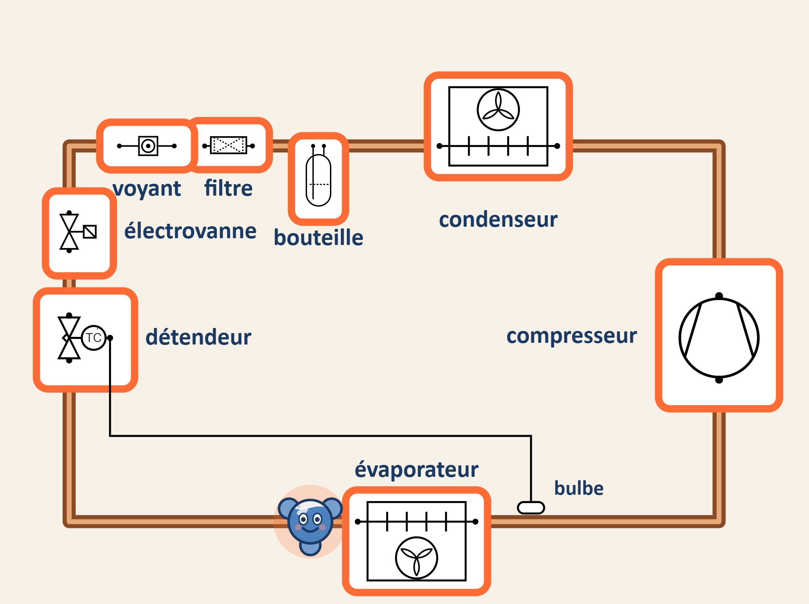

par F. Henninot
Le circuit frigorifique raconté par une molécule
Livret illustré
Toutes les formations du froid et de la climatisation

Scannez : le voyage s'anime
Livret interactif — 13 QR codes ouvrent chaque chapitre animé et raconté sur inerweb.fr, avec une question à chaque organe. Le film complet dure 9 minutes.
F. Henninot
Enseignant en filière froid et climatisation